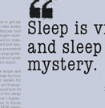
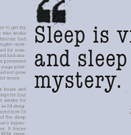

This project was in response to the First Things First manifesto on design. This project compares the designer to a superhero, because like spiderman and batman, we have the power to change things in the world, for better or for worse.
 

The first few images are photos that I staged for the layout of my magazine. The following images are pages from the layout itself. The content was given to me.